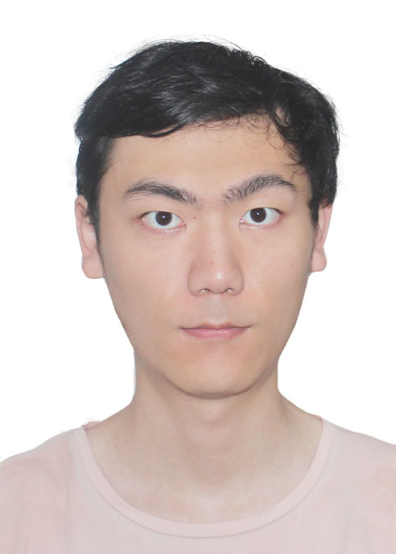

Yilin YE (叶依林)
|  | Master 2 de physique |
Éducation
Master, École Normale Supérieure (ENS), Paris, France [Sept. 2019 ~ Maintenant]
septembre 2022 ~ juin 2023
septembre 2021 ~ juin 2022
septembre 2020 ~ juin 2021
septembre 2019 ~ juin 2023
|
Licence, Université de Xiamen, Xiamen, Fujian, Chine [Sept. 2015 ~ Juin 2019]
|
Stages
Une approche probalistique aux phénomènes surfaciques contrôlées par diffusionSuperviseurs: Denis GREBENKOV, Laboratoire de Physique de la Matière Condensée (PMC), Palaiseau, France; [avril 2023 ~ juillet 2023]
|
|
|
Mouvement Brownian à côté d'une surface molle (M1S2)Superviseur: Thomas SALEZ, Laboratoire Ondes et Matiere d’Aquitaine (LOMA), Bordeaux, France; [février 2022 ~ juillet 2022]
|
Simulation de l’ICD vibrationnel sur des systèmes modèles à dimensions réduites (L3S2)Superviseur: Jérémie CAILLAT, Laboratoire de Chimie Physique-Matière et Rayonnement (LCPMR)Télétravail à cause de COVID-19, [juin 2020 ~ juillet 2020]
|
From Molecular Simulation to Machine Learning (Semaine découverte)Supervisor: Rodolphe VUILLEUMIER, Département de Chemistry, ENS; [février 2020]
|
Recherches
Recherche vers synthèse totale d'AtkamineSuperviseur: Yandong ZHANG, XMU; [janvier 2018 ~ mai 2019]
|
Recherche vers synthèse totale de Phainanoid ASuperviseur: Guangbin DONG, Université de Chicago, États-Unis; [juillet 2018 - septembre 2018] |
Recherche vers synthèse totale de (–)-Actinophyllic AcidSuperviseur: Yandong ZHANG, XMU; [juillet 2016 ~ janvier 2018]
|